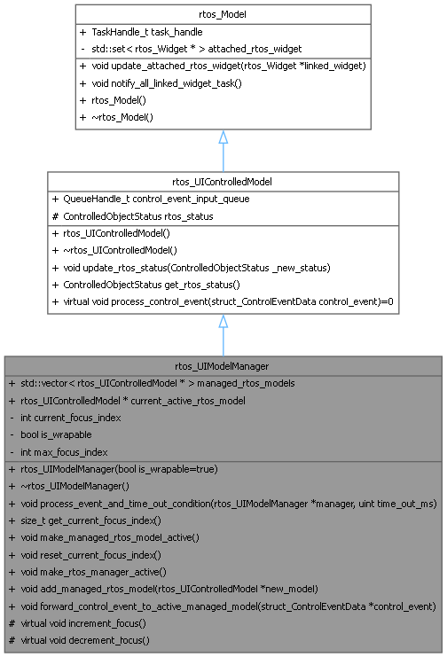
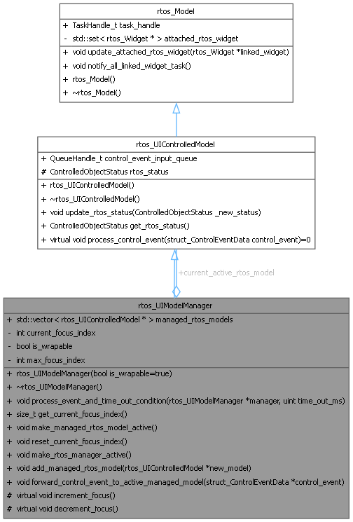
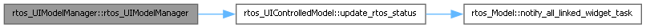
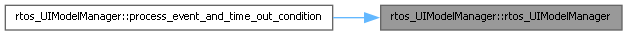
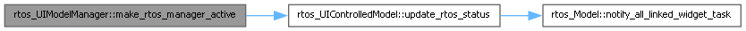
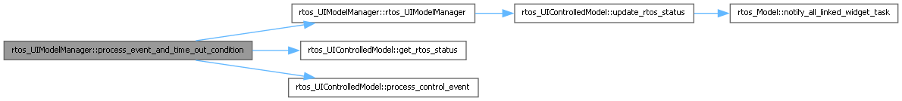

- Generated by
 1.16.1
1.16.1
RTOS wrapper for UIModelManager class This class represents a manager that can manage multiple controlled models in the RTOS-based UI framework. It extends the rtos_UIControlledModel class and provides functionality for managing focus among the controlled models, forwarding control events to the currently active model, and handling timeouts. The rtos_UIModelManager class maintains a collection of controlled models and manages the focus index among them. It provides methods to increment and decrement the focus index, which can be used to navigate through the controlled models. The manager can also forward control events to the currently active model, allowing for dynamic interaction based on user input. The rtos_UIModelManager class is designed to be extended by more specific model manager classes that represent different types of model management functionality in the UI. These specific model manager classes can then be linked to various widgets that display or interact with the managed models, enabling complex and interactive user interfaces in an RTOS environment. More...
#include <rtos_ui_core.h>


Public Member Functions | |
| rtos_UIModelManager (bool is_wrapable=true) | |
| Construct a new rtos UIModel Manager object. | |
| void | process_event_and_time_out_condition (rtos_UIModelManager *manager, uint time_out_ms) |
| Process a time out condition for the manager. | |
| size_t | get_current_focus_index () |
| Get the current focus index. | |
| void | make_managed_rtos_model_active () |
| Make the current active managed rtos_UIControlledModel the active one. | |
| void | reset_current_focus_index () |
| Reset the current focus index to zero. | |
| void | make_rtos_manager_active () |
| Make the rtos_UIModelManager the active one. | |
| void | add_managed_rtos_model (rtos_UIControlledModel *new_model) |
| Add a new managed rtos_UIControlledModel. | |
| void | forward_control_event_to_active_managed_model (struct_ControlEventData *control_event) |
| Forward a control event to the current active managed rtos_UIControlledModel. | |
| Public Member Functions inherited from rtos_UIControlledModel | |
| void | update_rtos_status (ControlledObjectStatus _new_status) |
| update the status of the controlled model | |
| ControlledObjectStatus | get_rtos_status () |
| Get the current status of the controlled model. | |
| virtual void | process_control_event (struct_ControlEventData control_event)=0 |
| process a control event received from the control event queue. | |
| Public Member Functions inherited from rtos_Model | |
| void | update_attached_rtos_widget (rtos_Widget *linked_widget) |
| link a new widget task to the model | |
| void | notify_all_linked_widget_task () |
| notify all linked widget tasks that the model has changed | |
| rtos_Model () | |
| constructor for RTOS model | |
| ~rtos_Model () | |
| destructor for RTOS model | |
Public Attributes | |
| std::vector< rtos_UIControlledModel * > | managed_rtos_models |
| A static vector containing all the managed rtos_UIControlledModel objects. | |
| rtos_UIControlledModel * | current_active_rtos_model |
| A static pointer to the current active rtos_UIControlledModel object. | |
| Public Attributes inherited from rtos_UIControlledModel | |
| QueueHandle_t | control_event_input_queue |
| FreeRTOS queue handle used to receive control events for this model. | |
| Public Attributes inherited from rtos_Model | |
| TaskHandle_t | task_handle {nullptr} |
| the task handle of the model task | |
Protected Member Functions | |
| virtual void | increment_focus () |
| Increment the focus index. | |
| virtual void | decrement_focus () |
| Decrement the focus index. | |
Additional Inherited Members | |
| Protected Attributes inherited from rtos_UIControlledModel | |
| ControlledObjectStatus | rtos_status {ControlledObjectStatus::IS_WAITING} |
| The status of the model, indicating if it is waiting, active or just ahs focus (pointed by the object manager). | |
RTOS wrapper for UIModelManager class This class represents a manager that can manage multiple controlled models in the RTOS-based UI framework. It extends the rtos_UIControlledModel class and provides functionality for managing focus among the controlled models, forwarding control events to the currently active model, and handling timeouts. The rtos_UIModelManager class maintains a collection of controlled models and manages the focus index among them. It provides methods to increment and decrement the focus index, which can be used to navigate through the controlled models. The manager can also forward control events to the currently active model, allowing for dynamic interaction based on user input. The rtos_UIModelManager class is designed to be extended by more specific model manager classes that represent different types of model management functionality in the UI. These specific model manager classes can then be linked to various widgets that display or interact with the managed models, enabling complex and interactive user interfaces in an RTOS environment.
| rtos_UIModelManager::rtos_UIModelManager | ( | bool | is_wrapable = true | ) |
Construct a new rtos UIModel Manager object.
| is_wrapable |


| void rtos_UIModelManager::add_managed_rtos_model | ( | rtos_UIControlledModel * | new_model | ) |
Add a new managed rtos_UIControlledModel.
| new_model | The new model to be added |
| void rtos_UIModelManager::forward_control_event_to_active_managed_model | ( | struct_ControlEventData * | control_event | ) |
Forward a control event to the current active managed rtos_UIControlledModel.
| control_event | The control event to be forwarded |
| size_t rtos_UIModelManager::get_current_focus_index | ( | ) |
Get the current focus index.
| void rtos_UIModelManager::make_rtos_manager_active | ( | ) |
Make the rtos_UIModelManager the active one.

| void rtos_UIModelManager::process_event_and_time_out_condition | ( | rtos_UIModelManager * | manager, |
| uint | time_out_ms ) |
Process a time out condition for the manager.
| manager | The manager to process the timeout for |
| time_out_ms | The timeout in milliseconds |
